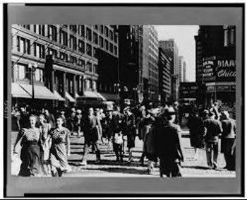

Whatever Became Of Studs Lonigan?

With the naming of a pope from Chicago and the new American administration enacting its policies, one hears from abroad repeatedly the comment: Why did they ever elect these people? The answer lies in the way the country was put together. To understand that perhaps the best thing to do is to read the Studs Lonigan trilogy by James M Farrell. In an acerbic review in the Washington Post, Jonathan Yardley took to task a certain kind of book on racism in America. Cynthia Carr's Our Town, the Hidden History of White America was self-centered and self-inflating, badly put together and more intent on displaying the author's paltry journalistic escapade than adding to our knowledge. Yardley saw Carr's book as descending directly from Edward Balls' Slaves in the Family (1998) and Diane McWhorter's Carry Me Home: Birmingham Alabama: The Climatic Battle of the Civil Rights Revolution (2001). That the first received a National Book Award and the second a Pulitzer Prize struck Yardley as rewards "less for their actual literary merits, which are slender, than for the correctness of their authors' views and, by no means least, those authors' eagerness to clad themselves in handsomely tailored hair shirts."
One can feel for the weary professional reviewer as his stifled love of good writing struggles under an avalanche of print lackadaisically assembled. Yardley is also probably right in noting that self-congratulation mars the books in question. Still, with all respect for his acumen, I think he misses one dimension of what's behind them.
Any American who has reached middle age has to look back wonderstruck at the changes in racial relations during his lifetime. No matter how imperfect the revision of attitudes, it has, as the non-American rest of the world goes, been achieved in a relatively short space of time. That middle-aged individual can't help but keep asking himself, "How could we ever have acted like that?" He wants now to capture memory and make it written history. Whatever the failings of Ball, McWhorter, and Carr, one of their unspoken motives must be simply to convince themselves that the "before" was as real as the "after" they see around them. The operation may also be clumsy, self-serving, and repetitive, but I find it essential.
There are period novels that can still bring home with force "how things were." In this sense Studs Lonigan is still very much around. He had more life in him than many literary critics gave him credit for. Perhaps good naturalist realism always surprises by what it contains besides naturalism. James T. Farrell gives us an incomparable view of big northern city racist and ethnic animosities in the first half of the twentieth century.
In Chicago, racism and cutthroat community rivalry weren't Carr's dirty little family secret. They were everybody's daily bread. The local definition of a neighborhood was "a place to be defended," and offense was often deemed the best defense. Farrell never intervenes personally in his Studs Lonigan trilogy to flaunt what Yardley calls, referring to Carr, "impeccable credentials on matters racial." Petrified rage, not grandstanding, sets Farrell's tone. He has no time for correctness of any sort. The terms of mutual abuse between communities that he reports without a blush would make a glossary of several pages. "This is how it is," he says, and turns his back on the city in disgust.
Young Lonigan (1932), The Young Manhood of Studs Lonigan (1934), and Judgment Day (1935) may have a different meaning for us than for their original public, but meaning in plenty they still have. (The Library of America published Studs Lonigan: A Trilogy edited by Pete Hamill in 2004.) Farrell wrote the three novels out of rancor for the Irish Chicago neighborhood he grew up in. He felt that the Catholic parish church at its center radiated obscurantism in all directions. Immigrants and their children exchanged uncertainty over their identity for a heavy lock and chain that bound them lifelong to a jejune and manipulable human model.
Farrell's frightened church spent its energies trying to keep its flock from contamination by the rest of North America. Public schools, the Rockefeller financed local university, H.L. Mencken and his ilk were the lurking dangers. The legalistic clergy had shrunk morality to a series of do's and do not's, the latter mainly sex policing. The siege mentality left little room for spiritual life. In fact, Farrell's briefest description of what ailed his community was "spiritual poverty." His own escape to richer mental fare passed through night classes at the same University of Chicago, a devouring obsession to put what he felt on paper, revolutionary socialism and the inevitable move to New York City.
The Lonigan trilogy, generally considered the finest achievement of his copious and uneven production, was Farrell's good-bye and good riddance to Irish Chicago. It shocked readers of the 1930s, even though the publisher, to play it safe, cagily presented the first volume in the guise of a "clinical study." Farrell's project was simple enough. He would take a fifteen-year-old boy deeply mired in the neighborhood and follow his wasted life right up to his premature death at thirty. The boy, Studs, would have all the vices of his environment and more -- for some other denizens of the same world possessed, along with their banality, the knack of getting on in life. Moreover, Farrell had too much sense to make Studs a simple figure in a determinist scenario.
But if Farrell's project was simple, it still held some mystery. This persists even after the recent appearance of a definitive biography. (An Honest Writer, The Life and Times of James T. Farrell, by Robert K. Landers, 2004.) In a word, why did Farrell decide to spend some eight hundred pages and five years of his life with the indecisive and low-flying Studs? Why, instead of fixing on a stalled adolescent, didn't the young writer start his career with a "bildungsroman" based on an alter ego? In his artless Chicago way, Farrell had been entranced by James Joyce's Portrait of an Artist as a Young Man. But he waited a few years to do a Back-of-the-Stockyards' version with his Danny O'Neill tetralogy.
Farrell tells us that Studs was based on a neighborhood boy he'd known, as if that explained his tenacious attachment to Studs' existence. In 1942, hung over, he noted in his diary: "I still seem never to have gotten a little of Studs Lonigan out of me." But, in spite of this hint, the mystery remains. Doubtless tied up in some dark place with the creative process, it's best left undisturbed. Surely, though, it has something to do with a trait often noted in Farrell: his distaste for his own characters. A World I Never Made was the title of one of his novels.
The 1930s readers of the trilogy were mainly struck by the savagery of the sons of the "lace-curtain-Irish." The account of their sexual exploits, sparing none of their inner thoughts, scandalized many. Readers did not, however, seem stirred by the fact that the novels revealed a city organized in communities acting like small states always on the brink of war with one another and agreeing only in their belief that African Americans brought the plague of plagues. Perhaps 1930s readers thought all that was best passed over in silence.
In the third millennium, however, it seems like a brilliant depiction of how the big cities, bursting with immigrants, both from Europe and homegrown from the Great Migration, actually functioned. Farrell's description of local sexual doings on the other hand hardly ruffles us. Since he wrote, so many novelists have opened so many bedroom doors that we have come to find the open air more exciting. When Farrell now catches our attention in carnal matters, it's a real tribute to his ability. His account, for instance, of a 1929 New Year's Eve party still manages to offend our sense of life's worth. But the night consisted of more than a rape and assorted brutalities. The 1920s had ended with a bang and the Great Depression waited in the wings. Studs woke up the next morning in the gutter with his health shattered for good. This was the end of the line, Farrell implied. What Irish Chicago had brought Studs to, 1920s capitalism had done for the nation.
Our changed perspective may have made the sex in the trilogy blander, but Studs's inability to accommodate his instincts in the moral parameters wished on him remains at the heart of his story. His church gave him no help at all, simply implanting enough guilt to increase his lifelong confusion. His was a classic case of seeing women as either good or bad, Madonna figures or harlots. His dilemma can be touching, as when he asks quite seriously whether even good girls "wiggle" when they walk.
In effect the trilogy can be read as a sexual chronicle, but of dissatisfaction, not fulfillment. Young Lonigan moves restlessly towards Studs's first experience of copulation. This occurs with a neighborhood scarlet woman, or rather teenager, since the girl is fourteen. True to local chauvinism, she refuses to service a Jewish boy in the line of Irish youth waiting their turn.
Racial and ethnic conflicts stay entangled with sex. In The Young Manhood of Studs Lonigan, prohibition and the loosening of traditional restraints let Studs's drunken friends feel free to visit a black jazz joint. They eagerly dance with black women and envision them as sexual partners. But "their faces went tight with hostility every time a white girl went by with a Negro." One of their number shows disgust for the racial promiscuity and leaves, fantasizing a return with a machine gun to wreak havoc. Instead, more realistically, he catches a cab and hurries to an all white brothel.
Despite his dissolute life, given to drink and whoring, Studs never breaks with the church. That would be giving up his shelter and identity. There are times when, wanting to reform, he makes use of the various comforting rituals. It's disconcerting to find him sweating in the confessional over his "sins" of masturbation or fornication one day, and going off the next on a sanguinary raid against hapless African Americans. His church gave no lead in matters of racial or ethnic tolerance. Indeed the national parish system practiced meant that Irish Catholics actually considered even Poles and Italians of their own faith as suspect.
Studs and his clan of louts on occasion defend their values at the open-air forum of Washington Park. They are quick to intimidate a little man who attempts to present the case for atheism. Another time, "the King of the Soap Boxers" cuts their heckling short. We are in "the City of Big Shoulders" and the speaker's physical stature is the kind that brooks no interruptions. The sense of his suitably tough talk is that Chicago's blacks are the victims of a situation they had no hand in creating. Apart from a few demonstrators, shouting slogans, Farrell has been unable to find anyone else in his city who shows similar understanding.
Money, of course, got mixed into the tangle of racism and sex. When Father Gilhooley finally gets his huge new church built on Michigan Avenue, the neighborhood abruptly turns African American and the good pastor finds himself in the ecclesiastical equivalent of the Depression. The Irish have all sold their houses and gone elsewhere, but not without first turning a tidy profit. De facto segregation meant that blacks, with less property open to them, would always have to pay more for the same dwelling than white buyers. The details of the various changes of residence of the Lonigans that Farrell reports furnish an excellent ethnic map and history of the city. So-called "white flight" was not something that only began in the 1960s.
Piety was no safeguard against racism. Studs's mother, a sedulous churchgoer, believed that blacks "had no soul." Nor did education help, and Studs's genteel sisters were vicious bigots. As for his father, this small businessman enriched his worldview by listening each week, along with thirty million other Americans, to the broadcaster Father Charles Coughlin. The Detroit priest was a notorious Fascist-sympathizing anti-Semite. Ironically, the elder Lonigan was also a faithful fan of "Amos and Andy." This long running radio show consisted of two white actors playing two black friends forever indulging in childishness. The bitter joke was that Lonigan could hardly bear the sight of a black American in the flesh.
This presence of religious faith and race hatred in the same person should not surprise us. Farrell has Studs and his buddies participating in the murderous anti-black attacks of 1919. He wrote before the ardent Catholic mayor Richard J. Daley held sway between 1955 and 1976. Daley, whose reign was distinguished, among other more "Realpolitik" features, by his regular morning attendance at mass, has been deemed by his biographers to have almost certainly played some role in the 1919 race riots.
Judgment Day finds Studs thinking twice. He has never recovered his health. Dissipation has killed a friend. Reluctantly he decides to marry. He sees the advantages as company and sex on demand. But he's not sure that Catherine, who readily accepts his proposal, isn't a shade common. He also hesitates, at thirty, to give up his boyish freedom. Finally he concedes that Catherine's respect for him outweighs her plainness. Still, the couple only manages to fix a day for the ceremony because Catherine falls pregnant.
At the same time, Chicago's business and industrial behemoth has come to a full stop. Lonigan Senior's tenants fail to pay their rent, and he can't meet his mortgage payments. His house painting business has gone into the doldrums and Studs could no longer work for him anyway because of his broken health. As befits 1920s representative characters, both father and son have bought dud stock promoted by the public utility magnate, Samuel Insull, whom Farrell gives a pseudonym and whose inverted pyramid of finance would soon collapse.
Studs, a few days before his marriage, has to venture into the Chicago Loop in search of lighter work. Thus begins the countdown to his death, and never has such a lustreless character had such a splendid passing. A commercial nation on the skids shows what it's made of. Dazed derelicts slouch through the Loop and a Hooverville sprawls under Wacker Drive. The jobs available are mainly swindles to extract money from would-be employees. One fraudster delivers a Dionysian spiel that makes even the ailing Studs crack a smile.
Finally he gives up trying and walks off into the rain, despising everyone and everything his eyes fall on. He lights up a forbidden cigarette and in desperation reaches out for his one sure support -- sexual desire. In a fever he hurries to the squalid burlesque houses of South State Street. There follows a description of the least erotic sex show of all literature. Nonetheless Studs's enthusiasm throws him into delirium. Then, out in the rain again, guilt wells up in him. Somehow he gets home, but his life is over.
The author, at this stage a fervent socialist, demurred from finishing his trilogy with Studs Lonigan's death rattle. He inserts a Communist demonstration before the last pages. But Farrell, to his credit, was never a message-delivering novelist. The parade is very much a party hat sitting on a corpse. The body is Irish Chicago, and Farrell's three books did a good symbolic job of killing it. Dead or not, however, it can teach us a lot about how our cities and our hates actually took shape.